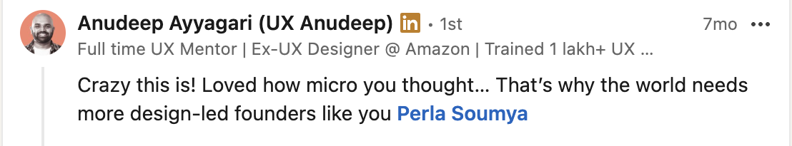

Design
builder.
I design and develop products for founders and startups.
I turn a founder's intent into a product they can run without me. A developer turned UX designer, I explore how UX and AI can eliminate cognitive load. For UX Gym, I designed and built the entire learning platform solo, cutting project reviews from a week to 2 days and admissions from 5 days to 4 hours.
30,000people a year use it
Guest house app Tata Steel
An enterprise app I designed and coded end to end, in my three years there (2021 to 2024)
300+students · 3 batches
UX Gym current work
Learning platform, 0 → 1, designed and built solo
25%more paying customers
AI UX launch
A four day live event the founder ran from his phone
↓ Keep scrolling

Projects
I've designed, built and shipped five products. Here are three.
Client work · UX Gym · learning platform
A founder who has taught 100,000+ people wanted a learning platform that doesn't feel like a textbook. I designed and built it solo, in one month.
Built for UX Gym, founded by UX Anudeep, ex Amazon.
View project →Client work · UX Gym · four day live launch
A live launch the founder ran from his phone, designed and built solo.
View project →
Client work · Tata Steel · guest house booking
Tata Steel ran guest house booking on calls and Excel. I designed and built the system that replaced it, solo. Now 2,000+ bookings a month are confirmed instantly, with no calls.
View project →Personal UX projects
A dictionary that reads the sentence, not just the word.
A dictionary lists every meaning of a word and leaves the reader to work out which one fits. I built a Chrome extension that reads the sentence around the word and gives the one meaning that fits: on a security page, "salting" is about passwords, not food. It works on email shorthand and Hinglish too.
One less thing to figure out, in the middle of reading.

Plan + Explore for Rapido: a day out in one app.
A visitor with one free day in a city plans it across four apps: ideas in one, reviews in another, routes in a map, then a ride booked four times. I designed one flow inside Rapido to find places, check the route works, and book every ride between stops. A concept, designed solo over six weeks.
Read the case study ↗Visual design work
Instagram campaign for a pen brand.
Made for S.S. Prime pens. Small, true moments every student has had with a pen.
Open to new work